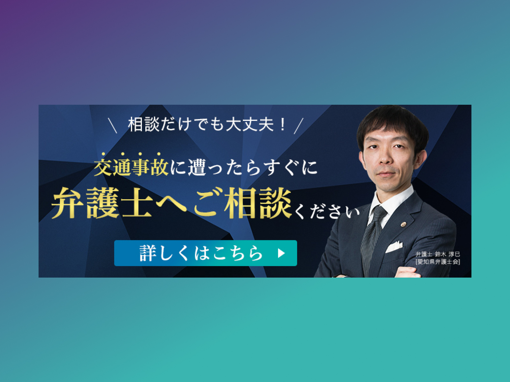

Banner on the blog
What’s the banner for?
Created a banner for company blog to redirect users to the website introducing my previous company's services.
GOAL
The goal is to increase user acquisition by guiding visitors from Google searches on the blog to the service site.
Details
- Attention-grabbing techniques:
- Designed in blue to align with the primary color of the service site. Additionally, included a photo of our founding lawyer to instill a sense of trust and reassurance for users.